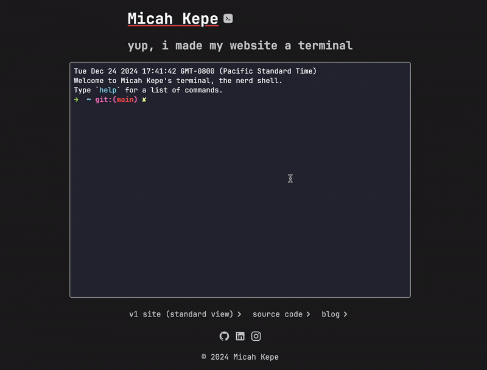

An experimental, configurable terminal website that I built for fun. The website is a client-side terminal emulator that runs a mock backend to simulate a shell environment. The website is built with vanilla TypeScript, HTML, and CSS. This site can be used as a template portfolio website or be modified to be a full-fledged terminal emulator.

The site uses xterm.js as a client-side browser terminal frontend emulation. As the user submits commands, they are parsed on the mock backend for filetree navigation, help page, etc.
The website is stateless and the filetree that doesn't persistent across client sessions. Upon refreshing, the website goes back to its initial state, which is intended.
The documentation for the site can be found in the docs/ directory. The
documentation is autogenerated with a tool called tsdoc that is run with the
npm run doc command. You can view the documentation by opening the
docs/index.html file in your browser.
The website is configurable via the config.json file for the following fields:
default_theme: the default theme for the terminalauthor.name: your nameauthor.email: your emailauthor.repo_url: the URL for the source codepage_title: the title of the websiteguest_username: the username for the guest userThe default filetree can be changeed by modifying the contents of the
/src/server/file-system/files/ directory.
Additional commands can be added to the src/server/commands/ directory. Each
command should be a class that extends the Command class and implements the
execute method.
The website supports multiple themes. The default theme is Dracula, but
CatpuccinMocha and SolarizedDark are also available. You can add your own
themes by creating a new ITheme implementation in the src/client/termina;/themes.ts
file.
You can specify the default terminal theme in the default_theme field of the
config.json file.
The following shortcuts are available:
| Shortcut | Description |
|---|---|
Ctrl + L |
Clear the terminal |
Ctrl + C |
Cancel the current command |
Ctrl + W |
Delete the last word |
Ctrl + U |
Delete the current line |
ArrowUp/ArrowDown |
Cycle through command history |
If you would like to contribute to the project, please follow the steps below:
git checkout -b feat/feature-name)git commit -am 'Add new feature')git push origin feat/feature-name)Lots of inspiration from other developers' websites: